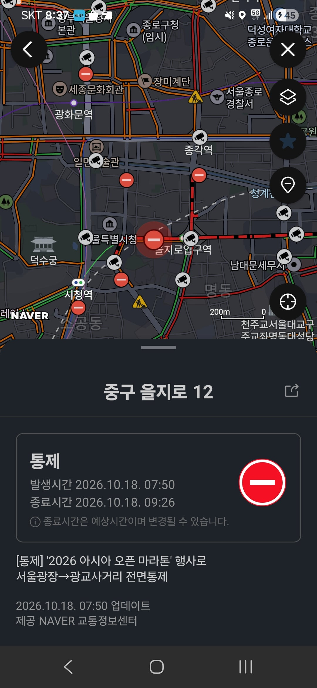

감기걸려서 싹다 뒤졌으면

감기걸려서 싹다 뒤졌으면

일요일인데 저 시간에 저쪽길로 출근함? 이게 뒤질정도인가
뭐 이번 한번임? ㅋ ㅋ
뉴스로 나올 정돈데 눈치 하나 안보는 배짱은 대단하다 마라토너나 마라톤 주최측이나
적당히 뛰어야지 시발
놀러도못감ㅠ
그러네 저 동네 사람들은 대회 하는동안 나가기도 힘들겠네
출근할때만 차 모나? 저기 갈일 잇는 사람들은 어ㅐ 불편해야하지
난 일산 사는데 저 씨발 호수로 다 쳐막아놓은 애미뒤진 마라톤 때문에 출근길 막혀서 차 집으로 빠꾸하고 꾸역꾸역 8km 걸어서 출근함 당연히 지각함 ㅅㅂ
중구에 저 동네면 출근하는 사람 꽤 있어
마라톤 참가자들은 문제 없는거 아님? 저걸 주최하는 놈들이랑 허가해준 놈들이 문제지
하는놈들도 문제임
ㄹㅇ "10만원이나 냈는데 등산객들도 이해해줘야 되는 부분이 아닌가" 하는거보면 걍 다 문제임 ㅋㅋㅋㅋ
ㄹㅇ좀 서울길바닥 쳐막는 행사좀 적당히 했으면 좋겠음
진짜 산업화시절때 도로 크게크게 안만들었으면 어쩔뻔했냐
한달에 11번 저지랄 한다니까 빡치긴 하겠다 ㅋㅋ
미안하다 어제 경주 풀코스 다녀왔는데
길건너고 싶은데 못건너는 사람들 많이 보이더라.
지도 보니까 걍 구 시내쪽을 봉인해놨던데 ㅋㅋㅋ
지방은 가끔하는거니 ㄱㅊ ㅋㅋ
그래서 교통량 적은 일요일 아침에 대화하는거잖아
굳이 도심해서 할필요도 없자나
아무리 그래도 너무 많아
사용료로 세금이라도 왕창 거두든가
그렇게 돈을 쉽게 땡기는데 안하는게 바보지 뭐
산좋고 물좋은 곳에서 뛰게끔 하라고
십련들 30분 걸어서 버스타고 집왔다
방금 저거 뛰고 왔다 근데 요새 말 많아서 오전 9시에 통제 풀림
서울에 나 어릴때부터 있던 러닝대회가 3개있는데
서울마라톤, 중앙마라톤, 서울레이스 임.
이거 빼고 나머지는 근 2,3년 내로 생긴 근본없는 대회라고 보면 됨.
너무 대책없이 생기긴 함..
싹다 돈보고 생긴거고 실제로 돈이 되는게 수치로 나오니까 개나소나 난잡하게 다 여는 중 걍 굿즈팔이 대회로 전락함
참가자들은 걍 대회있으니까 돈내고 가는거 아님? 뒤져야할정도인가
적당히 해야지 씨발
왜?굳이?도심에서하는건데??dmz에나 쳐가서 뛰든지
폭우온다는데 뭐하는짓들이야
서울에서하면 압도적인 인구수 + 대중교통 편리로 흥행이 보장되니까 ㅋㅋㅋ
마라톤 자원봉사 시간주는거 막아야함 그것만 해도 마라톤 많이 없어짐
조같은 새끼들. 이득은 왜 주최측이 보고 불편은 왜 공공이 감당해야 하냐? 시발 도심에 주말 볼일보러 가는 사람들 생각 안함? 도로에 사람 거의 없는 제주도나 지방가서 하라고 시발 지역경제도 활성화 되고 좋은데 왜 꼭 좁아터진 서울에서 못해서 개지랄이냐 좆같은 새끼들.
오늘 여주 다녀왔는데
예전이랑 다르게 길 자체를 완전히 막아버리는 통제 없이 코스를 짜서 할만하더라
어디 그냥 촌구석에서 하면 안되는건가
러닝하는 인구가 점점 많아져서 그런가 인스타 같은 sns 보면 머저리들 많이 보이더라
닉값하네